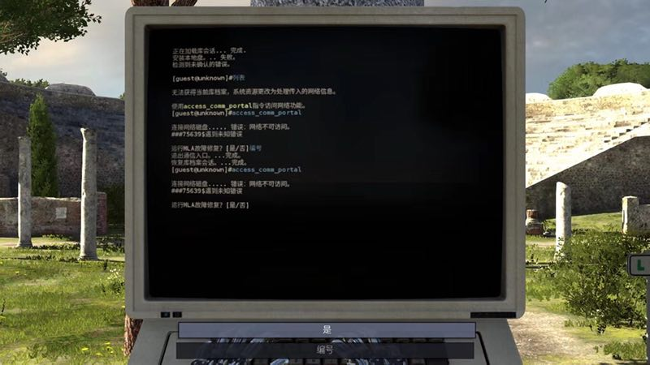
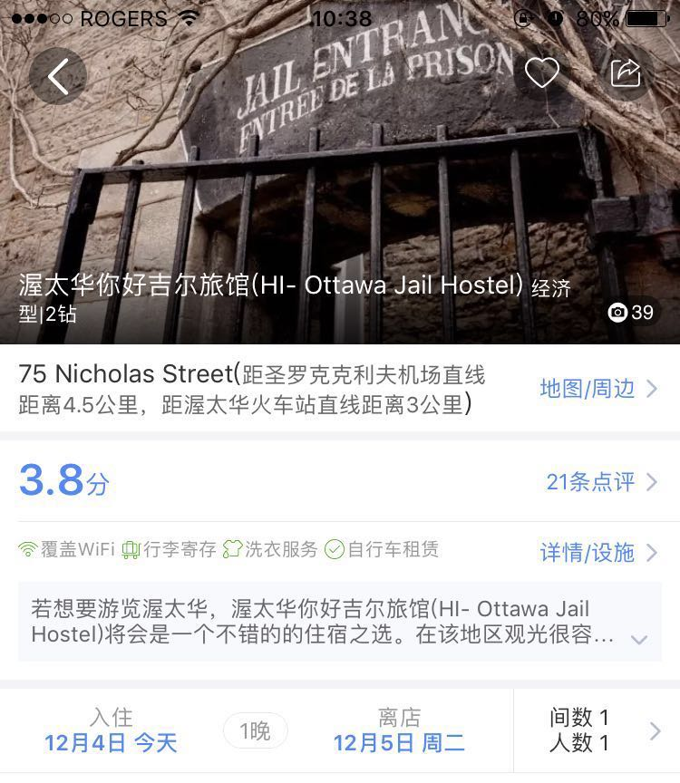

<!doctype html>
<html><!-- InstanceBegin template="/Templates/demo.dwt" codeOutsideHTMLIsLocked="false" -->
<head>
<meta charset="UTF-8" />
<!-- InstanceBeginEditable name="doctitle" -->
<title>个人博客 - 这些没头没脑的汉化翻译，害我笑出了声</title>
<!-- InstanceEndEditable -->
<!-- InstanceBeginEditable name="head" -->
<!-- InstanceEndEditable -->
<link href="../style/style.css" rel="stylesheet" type="text/css">
<link href="../style/core.css" rel="stylesheet" type="text/css">
<script type="text/javascript" src="../js/search.js"></script>
<link href="../favicon.ico" rel="shortcut icon" type="image/x-icon">
</head>
<body>
    <div id="container">
        <div id="header">
            <a href="../index.html"><div id="logo" title="个人博客 - blog"></div></a>
			<!-- InstanceBeginEditable name="nav" -->
			<a href="../login.html"><div id="user" title="登录"></div></a>
			<div id="nav">
                <ul>
                    <li><a href="../index.html" title="首页">首页</a></li>
                    <li><a href="../list.html" title="文章列表">文章列表</a></li>
                    <li><a href="../message.html" title="留言">留言</a></li>
                    <li><a href="../about.html" title="关于">关于</a></li>
				</ul>
			  </div>
			<!-- InstanceEndEditable -->
			<div id="music">
				
				<audio loop hidden="true" id="audio">
					<source src="../audio/bgm.mp3" type="audio/mpeg">
					<source src="../audio/bgm.ogg" type="audio/ogg">
				</audio>
				<script type="text/javascript" src="../js/music.js"></script>
			</div>
		</div>
		<div id="content">
			<!-- InstanceBeginEditable name="content_left" -->
			<div id="content_left">
				<div class="article_box">
					<p class="article_title">这些没头没脑的汉化翻译，害我笑出了声</p>
					<p class="time">2017-12-8</p>
					<div id="article_main">
						<p>每周 AppSo（公众号 AppSo）都会在微信上发起一场 #自爆话题# 让读者分享他们的数字生活经验。</p>

						<p>这周的 #自爆话题# 是「这些没头没脑的汉化翻译，害我笑出了声」，我们收到了很多读者的回复，大家都分享了他们遇到过的让人忍俊不禁的翻译。</p>

						<p>AppSo（公众号 AppSo）精选了部分回复，看看你有没有被这些翻译坑过，又或者被这些翻译笑翻。</p>

						<p class="article_title_little">影视剧翻译逼我去学英文</p>
						<div class="article_block"><p>去看大陆引进的第一个海贼剧场版，他们把革命军翻译成了正义联盟，当时在电影院看得笑出声。<span class="by">by Gentle</span></p></div>
						
						<div class="article_block"><p>《神探夏洛克：恐怖新娘》说好给中国观众的彩蛋，中国观众一脸疑惑之后发现了「马蹄内翻足」的牌匾…… 嗯，原来是 club foot——洗脚城……<span class="by">by 徐彧</span></p></div>


						<div class="article_block"><p>天马流星拳。（来自《环太平洋》）<span class="by">by Zht.</span></p></div>

						<p class="img_center"></p>

						<div class="article_block"><p>《权力的游戏》，最新一季有一集，Snow 去 Dragonstone 找龙妈谈判，小恶魔接风时跟囧雪寒暄说好久不见你这个 bastard，本来是说私生子的意思，结果字幕翻译成滚蛋，emmm，当时我就默默把字幕关了直接听了。<span class="by">by Danger</span></p></div>

						<p class="article_title_little">机器翻译闹出过的笑话</p>
						<div class="article_block"><p>不要怪我们没有警告过你， 我们都有不顺利的时候， Something happened， 这真是让人尴尬。 请坐和放宽， 滚回以前的版本， 这就是你的人生， 是的，你的人生。<span class="by">by WINNOOOE</span></p></div>

						<div class="article_block"><p>鹅鹅鹅鹅鹅鹅鹅鹅鹅鹅鹅鹅鹅嗯～鹅鹅鹅鹅鹅鹅鹅鹅鹅鹅鹅鹅鹅嗯～鹅鹅鹅鹅鹅鹅鹅鹅鹅鹅鹅鹅鹅嗯！淦！烂机车发不动～鹅鹅鹅鹅鹅鹅鹅鹅鹅鹅鹅鹅鹅嗯～鹅鹅鹅鹅鹅鹅鹅鹅鹅鹅鹅鹅鹅嗯～有谁还记得这个 Google 发音的小游戏。。现在还是笑到不能自已。<span class="by">by 啊??</span></p></div>

						<p class="article_title_little">全家桶</p>
						<div class="article_block"><p>《上古卷轴》 一开始开发商把游戏名字 the elder scroll 机翻成中文，于是有了「老头滚动条」。当然还有少女卷轴、萝莉卷轴之类的另外里面有个城有 n 多种名字，什么白漫城、雪漫城、白马城、雪花城… 一直有人争论这个。<span class="by">by Shadowmoon Just nyd 三位用户</span></p></div>

						

						<p>还有人补充：</p>

						<div class="article_block"><p>这就不得不提大名鼎鼎的《老头滚动条》了… 男票第一次提，我以为他猎奇去了… <span class="by">by 成小铭要积极锻炼抵御寒冬</span></p></div>

						<p class="article_title_little">不着天际、万物皆可萌的游戏翻译</p>
						<div class="article_block"><p>前几天玩洞穴，其中有一个道具叫「死了的电池」，嗯？一脸懵逼，啥子？后来想了想应该是英文「dead bettary」（用光了的电池）被直译过来了。<span class="by">by Hds</span></p></div>

						<div class="article_block"><p>我见过比较搞笑的应该是把土耳其翻译成火鸡吧… 足球经理里面火鸡爆冷战胜巴西之类的…<span class="by">by 山谷笛声㍿</span></p></div>

						<div class="article_block"><p>城市天际线！ 自从有了道路命名系统之后，游戏自带的路名就彻底崩坏了。国外的路名有很多诸如 Steve Street 这种人名命名的，结果官中就变成陈大街、刘路这种莫名其妙的路名；最搞笑的是竟然还有大妈街、奶奶路！每次室友看到我游戏里这些鬼畜的路名，都忍不住觉得我是个变态… 求 P 社来一版中国特色社会主义的汉化版本好吗！<span class="by">by Bolstle</span></p></div>

						

						<div class="article_block"><p>当然是暴雪爸爸国外的广告大片啦。The storm is coming，神翻译成风暴要火，画面太美不敢看。<span class="by">by 倾国倾层滴美岚纸</span></p></div>

						<div class="article_block"><p>Arena of Valor。<span class="by">by 我猴猴看</span></p></div>

						

						<div class="article_block"><p>还有《恶魔五月哭》你造是啥吗？哈哈哈哈《Devil May Cry》
。<span class="by">by 蒋巍</span></p></div>

						<div class="article_block"><p>我的世界早期版本曾经把 Redstone（红石）翻译成了雷石东。 <span class="by">by LYJ_Vincent</span></p></div>

						<div class="article_block"><p>塔洛斯的法则把终点汉化了…… No(否) 被翻成编号。<span class="by">by 鶫</span></p></div>

						

						<p class="article_title_little">	还有这种操作？</p>
						<div class="article_block"><p>别说国外应用进入国内市场了。国内 App 遇到翻译也是经常出现奇怪的情况。比如这间明明是体验监狱住宿的主题旅馆，名字叫 Hi-Jail。被强行翻译成你好吉尔，想象一下每次法庭宣判「判决被告在吉尔里面住三年」。<span class="by">by PpZ</span></p></div>

						

						<div class="article_block"><p>you share rose and get fun 鱼香肉丝盖饭 <span class="by">by 一水间</span></p></div>

						<div class="article_block"><p>supercalifragilisticexpialidocious 人见人爱花见花开车见车爆胎 <span class="by">by 谷贞</span></p></div>

						<div class="article_block"><p>Are you kidding? 你是凯丁吗？No, I’m serious. 不，我是希尔瑞斯。<span class="by">by 小白兔</span></p></div>

						<div class="article_block"><p>不正常的汉语没见过，不过我做 App 时，老板要求做国际化我都是用有道或者用我刚飘过四级的蹩脚英语翻译的 <span class="by">by 知名不具</span></p></div>
						
						<p>原文链接：<a href="http://www.ifanr.com/app/951369">这些没头没脑的汉化翻译，害我笑出了声</a></p>
					</div>
				</div>
			</div>
        	<!-- InstanceEndEditable -->
			<div id="content_right">
				<p class="title_big">搜索</p>
				<div class="box_right_search">
					<form class="search">
						<input type="text" name="search" id="search_put" placeholder="请输入您要搜索的内容..." required autocomplete="off" onKeyPress="return enterit(event,'search_put')" onKeyDown="return enterit(event,'search_put')">
						<input type="button" class="search_image" value=" " name="search_image" onClick="javascript:clickit('search_put')" title="百度搜索">
					</form>
				</div>
				<p class="title_big">最近更新</p>
				<div class="box_right">
					<ul>
						<li><a href="1.html">『电脑桌面文件超乱？教你 3 大绝招快速整理』</a></li>
						<li><a href="2.html">『这些没头没脑的汉化翻译，害我笑出了声』</a></li>
						<li><a href="3.html">『用了 Emoji 后，App 的吸引力能翻倍？🤔 | 灵感早读』</a></li>
						<li><a href="#">『电脑桌面文件超乱？教你 3 大绝招快速整理』</a></li>
						<li><a href="#">『电脑桌面文件超乱？教你 3 大绝招快速整理』</a></li>
						<li><a href="#">『电脑桌面文件超乱？教你 3 大绝招快速整理』</a></li>
					</ul>
				</div>
			</div>
        </div>
        <div id="footer">
            <p align="center">CopyRight &copy; 2017 冯彦涵.</p>
        </div>
    </div>
</body>
<!-- InstanceEnd --></html>